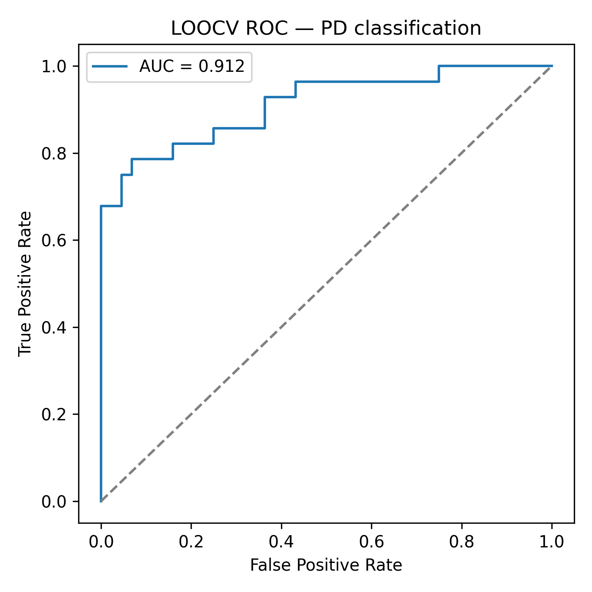
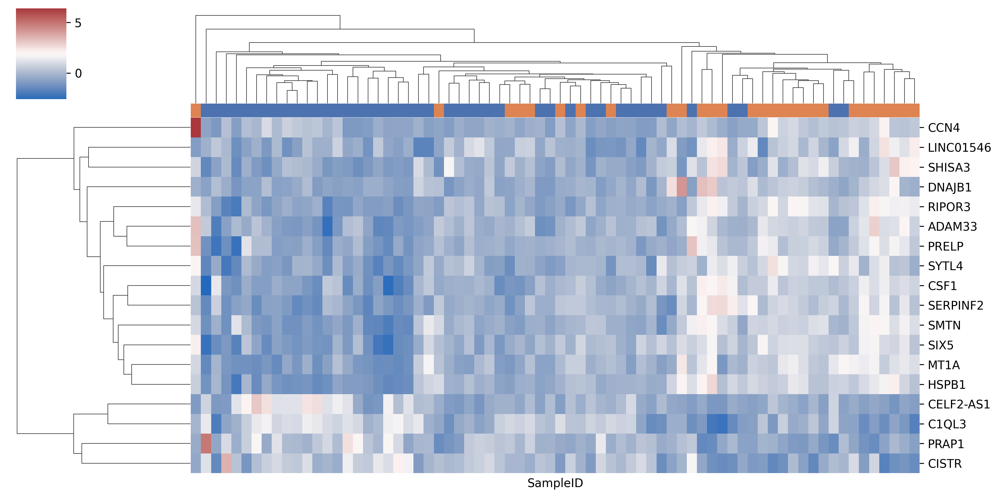

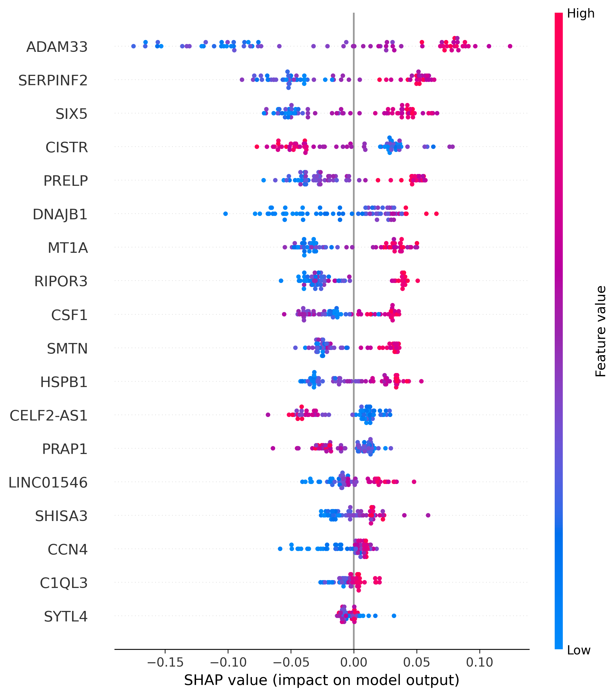
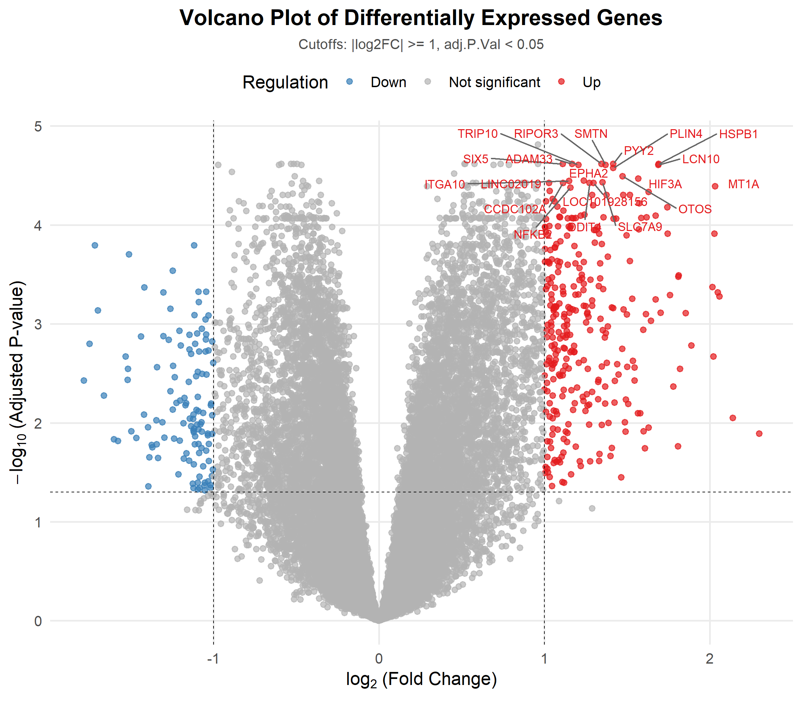

1. Pipeline Architecture & Project Purpose
Clinical diagnosis of Parkinson's Disease often occurs late after extensive neurodegeneration. This project develops an end-to-end bioinformatics and machine learning framework that isolates a high-confidence, non-redundant gene panel from brain cortex RNA-Seq transcriptomes, providing objective molecular biomarkers and biological interpretability.
limma-voom empirical Bayes modeling filters 21,537 genes down to 430 significant DEGs (|log2FC| > 1, FDR < 0.05).
Excludes uncharacterized LOC* loci, pseudogenes, microRNAs, and snRNAs to retain genuine protein-coding genes.
Runs parallel feature selection: LASSO L1 regression, Boruta random forests, SVM-RFE, XGBoost Gini importance, and Mutual Information.
Merges the Top-10 LASSO and Top-10 Boruta candidates into an 18-gene consensus panel, preventing individual model overfitting.
Cross-validated via LOOCV (86.1% accuracy, 0.912 AUC). SHAP TreeExplainer quantifies exact per-sample log-odds attributions.
2. Multi-Method Feature Selection & DEG Workbench
Toggle algorithms, filter by consensus strategy, or upload custom candidate DEGs.
| Gene Symbol | Votes | In Panel | LASSO | Boruta | SVM | XGB | MI | log2FC | FDR padj |
|---|
3. Analysis Plots Showcase (Research Gallery)
Explore the published diagnostic, validation, and interpretability figures generated from this pipeline.

Why Leave-One-Out Cross-Validation?
With 72 postmortem biospecimens, random train/test splits introduce high sampling variance. Leave-One-Out Cross-Validation trains on 71 subjects and tests on the single held-out subject, repeating 72 times. This gives the gold-standard validation performance without optimistic overfitting.
Clinical Discrimination:
- Sensitivity (PD Recall): 71.4% (20 / 28)
- Specificity (Control Recall): 95.5% (42 / 44)
- Positive Predictive Value (Precision): 90.9%

Hierarchical Dendrogram Clustering
This clustering received no diagnostic labels. The unsupervised tree naturally separates Parkinson's disease subjects (orange bar) from neurologically normal controls (blue bar), matching the ~86% classification accuracy.
ADAM33, DNAJB1, RIPOR3, SIX5, MT1A, SMTN, SERPINF2, CSF1, HSPB1CELF2-AS1, C1QL3, PRAP1, CISTR

SHAP Beeswarm Feature Impact
SHAP (SHapley Additive exPlanations) computes exact game-theoretic attributions for each feature across the cohort. Features are ranked from top to bottom by global explanatory power.
Selected independently by both LASSO and Boruta; highest overall magnitude in pushing predictions toward Parkinson's disease.
DNAJB1 (Hsp40) and HSPB1 (Hsp27) reflect cellular protective responses against hallmark α-synuclein protein misfolding.

21,537-Gene Volcano Plot
Generated from limma-voom linear modeling. Genes in the upper right quadrant (red) are significantly upregulated in Parkinson's disease; genes in the upper left (blue) are significantly downregulated.
- FDR adjusted p-value < 0.05 (horizontal threshold)
- |log2 Fold Change| > 1.0 (vertical thresholds, corresponding to 2-fold change)
4. Patient-Level Decision Audit (SHAP Waterfall)
Audit individual clinical classifications through transparent, additive gene contributions.